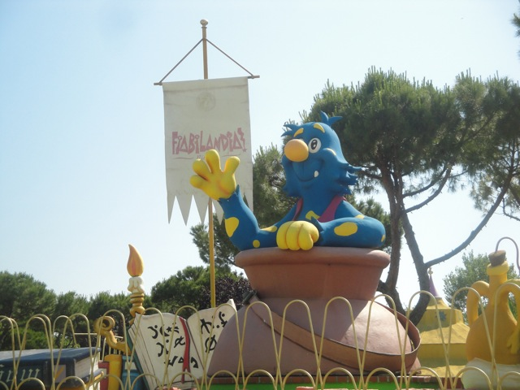
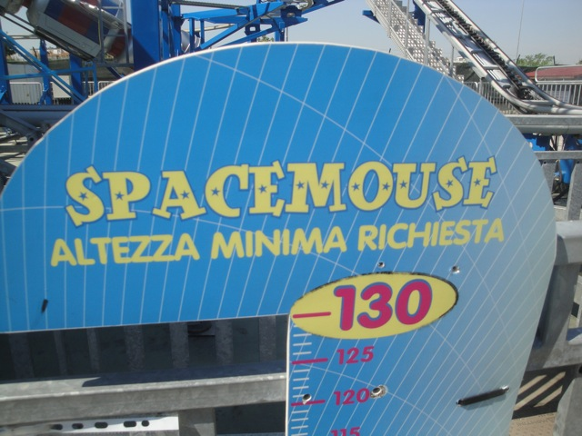
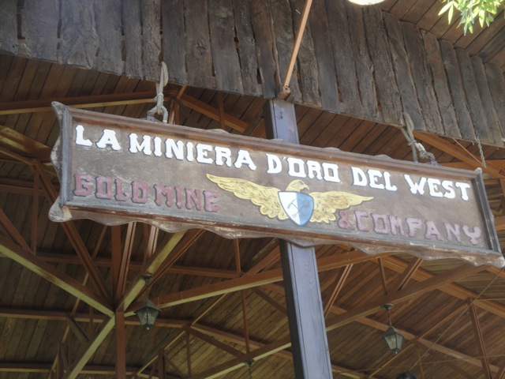

| |
Fiabilandia Review

Fiabilandia is a fun little small park right in the small little beach town of Rimini. This isn't a park that usually gets talked about that often because its not a huge amusement park with any big roller coasters. And yeah, I totally understand that. There's no Ispeed or Katun or Shock over here. So what brought me over to Fiabilandia to begin with? Well, first off. I was on a trip that stopped here. So that's the ultimate reason why I came. But why did the group as a whole decide to stop at Fiabilandia? What brought a bunch of coaster enthusiasts to this small little Italian Park? Well, the park does have three credits. No doubt about that. None of the credits are crazy or anything, but they're a little better than just credit whoring machines. They have a Pole-Position style Spinning Mouse, which was a lot of fun. And they have perhaps the best Wacky Worms ever! No seriously! These are not your typical everyday Wacky Worms! They have tunnels, theming, and are among the best kiddy coasters ever! So that's fun for sh*ts and giggles. And aside from that, its just a fun little Italian park to spend some time at. Nothing else really screams "I'M SPECIAL! TALK ABOUT ME!". But for Rimini, I'd consider it to be a fun little place.
Rollercoasters
There is a link to a review of all the Rollercoasters at Fiabilandia.
Top Coasters
Space Mouse Review

Kiddy Coasters
Miniera d'Oro Del West Review

Valle degli Gnomi Review

Flat Rides
Here are the reviews of all the Flat Rides at Fiabilandia. And you may think that this park has a mediocre flat ride collection. That's too kind to the park. Ok, I'm being harsh. But it really does have a mediocre flat ride collection. The only flat ride I recall riding at Fiabilandia would be their slide. And it's not even special. Just your typical Super Slide. Aside from that, they have a maze. Maybe a carousel? Ok. You see my drift? This is what I mean when I say that Fiabilandia is lacking in the flat ride department.
 This is the best that Fiabilandia's got folks.
This is the best that Fiabilandia's got folks.
Dark Rides
While Fiabilandia may be lacking in the flat ride selection, they certainly have a lot to choose from in the dark ride selection. And by a lot, I mean two dark rides. So yeah. Fiabilandia is not Disneyland. But come on. Anyone honestly expecting that is an idiot. Sorry, but its true. And to be fair, having 2 dark rides is above average. Especially if you're a small little unknown park and many parks don't have any dark rides, and if they do, its usually just one dark ride. All right. Let's get moving. First up, we have Il Lago del Sogno. This is a sort of Fantasyland style dark ride where they have you be eaten by a dragon. It's all right. Kind of rips off the Storybook Canals from the Disney parks. But hey. If you're too lazy to go the 1,187 km to Disneyland Paris, you can just ride this dark ride and be eaten by a dragon! =) The other dark ride they have at Fiabilandia is Il Castello de Merlino. This is basically just a ghost train. It's not that amazing, has some cheap theming, as well as an outdoor section. But hey, if you're at Fiabilandia, you might as well ride it.
 Warning. You might get wet on this ride.
Warning. You might get wet on this ride.
Water Rides
I didn't ride the water ride at Fiabilandia. But from what I saw, they do have a Splash Battle at this park. It's got some fish theming, it looks fun enough, and considering that Italy can get HOT in the summer (32-35 degrees C), it's probably worth a ride.
Dining
I did not eat at Fiabilandia.
Theming and Other Attractions
Here are the reviews of all the other stuff at Fiabilandia. As far as theming goes, they have a little bit. About as much as your typical small park has. They have an American themed area, because those things are extremely popular in European Parks. They also have some Fantasy theming among other stuff. But again. It's just typical small park theming. Moving on. What other attractions do they have at Fiabilandia? Not much. You can go on a boat ride. But really? There's not a whole lot of other stuff here. It's pretty much just the rides and the arcade games and stuff. So yeah. Arcade Games. Yay!!
In Conclusion
Fiabilandia is a small little park that is fun to visit for a few hours. Is the park anything amazing or to scream over? No. In a certain sense, the park primarily is a credit whoring stop. But unlike other credit whoring stops where there's only one itty bitty kiddy coaster that you're emberrased about riding, ride anyway to boost your count, and them immidietly leave, the credits at Fiabilandia, while nothing amazing, are still fun. The spinning coaster does a decent job at spinning, and the Wacky Worms, though still Wacky Worms, are at least a custom layout with some decent by small park standards theming that make them glad you rode it for more than just the credit's sake. But honestly, I think the biggest reason for going to Fiabilandia would be just the fact that it's located in Rimini. I LOVED Rimini. I loved the beaches here. I loved the resteraunts. The night-life is great! Throw in some credits, make them not suck, and I'm a happy guy. So definetly take a quick visit to Fiabilandia, but make sure you check out the rest of Rimini in full detail.
Enthusiast FAQs.
*Are there kiddy coaster restrictions? - Nope. You can ride the kiddy coasters here.

Tips
*Drink lots of water.
*Ride the Wacky Worms here. They're actually fun rides at Fiabilandia.
*Don't forget to check out the rest of Rimini.
*Have Fun!!!!
Theme Park Category:
Small Park
Location
Rimini, Emilia-Romagna, Italy
Last Day Visited
June 19, 2012
Video
I do not have enough footage for a Fiabilandia video. There's really no need for a video of a park this small, but it's not impossible to say that this park will ever get a video of its own.
Complete Update List
2012
TPR's Mega Europe Trip
Here's a link to the parks website.
Home
|